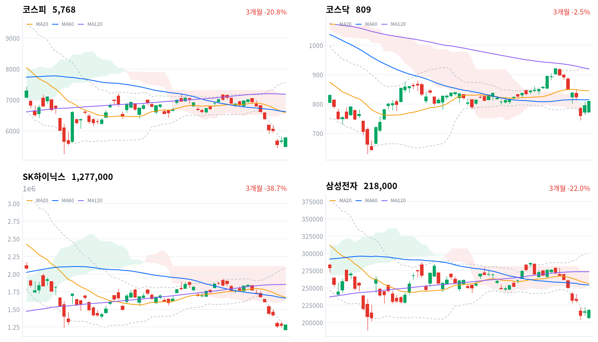

코스피는 미국 반도체 급락 여파로 3% 넘게 낮게 출발했지만, 그날 저점에서 출발해 고가에 마감했다. 기관이 순매수했고, 반도체 대형주보다 2차전지·제약·화학이 더 크게 올랐다.
이 반등은 외국인 매수 회복보다 기관 순매수와 반도체 밖 업종의 강세가 만든 것으로 본다. 10월 21일까지의 외국인 수급과 10월 22일 2차전지 종가가 다음 판단 기준이다.
직전 미국 세션에서 나스닥이 2.15% 내렸지만, 코스피는 갭하락을 장중에 모두 되돌리고 2거래일 연속 올랐다. 반등을 받친 것은 기관 순매수(5,516억원, 당일 잠정)였다. 같은 날 종합금융투자사의 신용융자 쏠림 관리가 시작돼 일부 증권사가 삼성전자·SK하이닉스의 신규 신용매수를 막았고, SK하이닉스는 0.39% 오르는 데 그쳤다.
장 마감 뒤 보도는 외국인 순매수와 저평가로 반등을 설명한다. 외국인 매도 압력이 줄었다는 데는 동의하지만, 이날 지수를 끌어올린 것은 외국인이 아니었다. 외국인 순매수는 1,027억원(당일 잠정)으로 작고, 장 마감 직후 보도는 소폭 순매도로 전해 방향도 아직 확정되지 않았다.
이번 반등은 기관이 받치고 반도체 밖으로 퍼진 업종 순환으로 판단한다. 반도체와반도체장비 업종은 1.90% 올랐지만 오른 종목 비율이 60%에 그쳤고, 전기제품(+6.88%)과 화학(+5.56%)은 오른 종목이 80%를 넘었다. 기관 순매수와 이 업종 분포는 매수가 반도체 대형주 밖으로 옮겨 갔다는 해석과 부합하지만, 업종별 투자자 순매매 자료가 없어 실제 자금 이동은 확인하지 못했다. 삼성SDI(+11.7%) 급등도 미국 ESS 이익 재평가보다 반도체 대형주 신규 신용매수가 막힌 날의 순환매로 본다. 중국 업체의 미국 ESS 철수로 한국 배터리의 이익 전망이 실제로 바뀌기 시작했을 수도 있으나, 재료가 대만 매체 한 곳의 보도이고, 8월 26일 행정명령과 관세 격차처럼 이미 알려진 미국 정책의 재확인에 가까우며, 업체별 수주·가이던스가 아직 없다. 두 설명은 10월 22일 종가에서 삼성SDI·LG에너지솔루션이 10월 19일 종가를 지키고 코스피보다 강한지로 갈린다.
하루 반등만으로 추세가 바뀌었다고 보기는 이르다. 반도체 대형주가 이끈 반등이 아니고 외국인 방향도 아직 정해지지 않았기 때문이다. 그래서 새로 제안할 상품은 없다. 먼저 볼 것은 10월 21일 마감까지 세 세션의 외국인 코스피 수급이다.
코스피가 10월 19일 기준 볼린저 밴드 하단 5,618 아래로 다시 마감하면 2거래일 반등이 밴드 안에 자리 잡지 못한 것이므로, 매도 압력이 줄었다는 판단을 철회한다. 2차전지 순환매 해석은 10월 22일 종가에서 두 종목이 10월 19일 종가 이상이고 코스피보다 강하면 철회하고, 이익 재평가를 우선 설명으로 본다. 이익 변화 자체는 수주·가이던스로 따로 확인한다.
출처: 한국경제TV, 뉴스1
직전 미국 10월 16일 세션은 AI·반도체 매도로 내렸다. 나스닥이 2.15%, S&P500이 1.09%, 다우가 0.34% 내렸다. 오늘 아시아는 엇갈렸다. 닛케이(-0.62%)와 대만가권(-0.61%)이 내리고 상해종합(+0.39%)은 올랐으며, 항셍(+0.52%)은 10월 16일 값이라 같은 날 비교가 아니다. 코스피는 네 지수 평균(-0.08%)보다 1.84%포인트 더 올랐다.
코스피는 전일 종가(5,668)보다 3.17% 낮은 5,488에서 출발했고, 이 시가가 그날 저점이었다. 한국 정규장 동안 미국 선물은 S&P 선물 +0.23%, 나스닥 선물 +0.50%로 올라 장중 반등에 바깥 부담을 더하지 않았다.
코스피와 코스닥 모두 시가가 저점, 종가가 사실상 고가인 하루였다. 코스피는 10:30에 전일 종가 위로 올라서 갭하락을 1시간 반 만에 지웠고, 오후에는 5,700선 부근에서 머물다가 마지막 한 시간에 다시 올랐다. 오후 고점에서 크게 밀린 10월 16일과 반대의 마감이고, 원화도 반등장과 함께 강해졌다.
지수를 끌어올린 것은 기관 매수와 반도체 밖 업종이었다. 연기금 순매수가 9월 11일 이후 가장 컸고, 매수가 반도체에서 2차전지·헬스케어로 옮겨 갔다는 해석도 보도로 나왔다. 시간외 거래와 투자자별 장중 흐름은 자료가 없어, 마지막 한 시간의 상승을 어느 주체가 이끌었는지는 가리지 못한다.
출처: 아주경제, 머니투데이, 경인방송
코스피는 1.76% 오른 5,768, 코스닥은 1.78% 오른 808.89로 마감해 두 지수가 비슷한 폭으로 올랐다.
| 지수 | 종가 | 등락률 | 시가 | 고가 | 저가 | 전일 종가 |
|---|---|---|---|---|---|---|
| 코스피 | 5,768.01 | +1.76% | 5,488.41 | 5,768.01 | 5,488.41 | 5,668.05 |
| 코스닥 | 808.89 | +1.78% | 773.06 | 808.92 | 773.06 | 794.78 |
| 주체 | 순매수(억원) |
|---|---|
| 개인 | -12,115 |
| 외국인 | +1,027 |
| 기관 | +5,516 |
| 주체 | 순매수(억원) |
|---|---|
| 개인 | +718 |
| 외국인 | -1,559 |
| 기관 | +692 |
코스피 반등을 받친 것은 기관이다. 기관은 5,516억원을 순매수했고(전일 6,815억원 순매도, 당일 잠정), 개인은 1조2,115억원을 순매도했다(전일 5,126억원 순매도). 외국인은 1,027억원을 순매수해(전일 3,637억원 순매수, 당일 잠정) 2거래일 연속 순매수다. 다만 장 마감 직후 보도는 외국인이 소폭 순매도했다고 전해, 외국인의 방향은 확정치에서 바뀔 수 있다. 어느 쪽이든 하루 수조원대였던 10월 둘째 주의 매도보다 압력은 크게 줄었다. 외국인이 삼성전자를 사고 SK하이닉스를 팔았다는 보도도 나와, 외국인 매수가 돌아왔더라도 메모리 대장주 둘 사이에서는 방향이 갈렸다.
코스닥에서는 외국인이 1,559억원을 순매도했고(전일 945억원 순매도) 기관(692억원)과 개인(718억원)이 받아 냈다. 코스닥 상승은 코스피와 달리 외국인 매도 속에서 나왔다.
장중 누적 수급과 프로그램 매매는 받을 수 있는 자료가 없어 싣지 않는다.
출처: 서울신문
| 순위 | 종목/ETF | 구분 | 거래대금 | 비고 |
|---|---|---|---|---|
| 1 | SK하이닉스 | 개별주 | 4.58조원 | - |
| 2 | 삼성전자 | 개별주 | 3.58조원 | - |
| 3 | 반도체 테마 ETF | 테마·롱 | 2.28조원 | 28종 합산 |
| 4 | 삼성전기 | 개별주 | 0.92조원 | - |
| 5 | KODEX CD금리액티브(합성) | 단기금리·현금성 | 0.78조원 | - |
| 6 | 2차전지 테마 ETF | 테마·롱 | 0.72조원 | 14종 합산 |
| 7 | 삼성전자우 | 개별주 | 0.69조원 | - |
| 8 | 삼성SDI | 개별주 | 0.58조원 | - |
| 9 | TIGER CD1년금리액티브(합성) | 단기금리·현금성 | 0.39조원 | - |
| 10 | SK스퀘어 | 개별주 | 0.37조원 | - |
단위 백만원 원본을 조 단위로 환산했다. 같은 기초자산 ETF는 방향별로, 같은 테마 섹터 ETF는 테마별로 묶고 지수·해외 ETF는 제외했다.
거래대금은 여전히 반도체에 몰렸지만 반도체 주가는 거의 오르지 않았다. SK하이닉스(4.58조원)·삼성전자(3.58조원)·반도체 테마 ETF 28종 합산(2.28조원)이 1~3위였는데, 대표 ETF 기준 섹터 막대에서 반도체는 하루 0.02% 오르는 데 그쳤다. 2차전지는 테마 ETF 14종 합산(0.72조원)이 6위, 삼성SDI(0.58조원)가 8위에 들어 거래와 주가가 함께 움직였다. 단기금리를 따르는 CD금리 상품 두 종도 상위 열 줄에 남았다.
업종 상승은 반도체 밖에서 넓었다. 전기제품은 68종목 가운데 57종목, 화학은 122종목 가운데 102종목이 올랐다. 비철금속(+4.59%)도 40종목 가운데 32종목이 올라 폭넓은 상승이었다. 반도체와반도체장비는 173종목 가운데 103종목만 올라 좁은 상승이었고, 제약(+3.39%)도 174종목 가운데 121종목이 올라 일부 대형주가 업종 등락률을 끌어올렸다.
대표 ETF 기준 한 주 수익률로는 반도체(-16.29%)가 여전히 가장 약하고, 헬스케어(+6.02%)와 2차전지(+5.41%)가 가장 강하다.
반도체 대장주는 지수만큼 오르지 못했다(삼성전자 +1.16%). SK하이닉스는 그보다 덜 올랐다. 장 초반 미국 반도체 급락 여파로 밀렸다가 저가 매수로 반등했다는 보도가 나왔다.
2차전지 셀·소재주가 급등했다(삼성SDI +11.7%, LG에너지솔루션 +7.2%, 엘앤에프 +7.26%). 중국 주요 ESS 업체가 미국 영업에서 사실상 철수하고 있다는 대만 매체 보도가 재료였다. 여러 매체가 같은 보도를 옮긴 것이라 독립 확인은 아니고, 실제 철수 규모도 확인되지 않았다.
삼성전기는 내렸다(삼성전기 -1.52%). 확인된 재료 없음.
조선 대형주도 내렸다(HD현대중공업 -1.71%). 확인된 재료 없음.
제약·바이오 대형주가 크게 올랐다(삼성바이오로직스 +9.94%, 유한양행 +8.71%). 법원이 삼성바이오로직스 노조의 핵심 생산공정 쟁의행위를 금지해 생산 차질 우려가 줄었다는 보도가 나왔다. 유한양행은 외국인 매수 보도 외에 확인된 재료 없음.
이 밖에 2차전지 소재주 포스코퓨처엠(+10.9%)·LG화학(+8.46%)·롯데에너지머티리얼즈(+18.42%)와 SK이노베이션(+7.24%)이 크게 올랐고, 현대차(+4.49%)·기아(+5.26%)도 강했다.
출처: 글로벌이코노믹, 서울신문, 뉴스핌, 한국경제, 서울경제, 남도일보
국고채 금리는 단기와 장기가 같은 폭으로 올랐고, 신용 금리차는 넓은 채 그대로다. 국고채 3년물은 3.877%, 10년물은 4.205%로 둘 다 2.3bp 올라 두 만기의 기울기는 32.8bp로 변하지 않았다. 회사채 AA- 3년물은 1.9bp 오른 4.56%였다. 국고채 3년물과의 금리차는 68.3bp로 0.4bp 좁혀지는 데 그쳐 최근 2년(530거래일) 가운데 넓은 쪽 10% 안에 머물렀다.
| 지표 | 금리 | 전일比(bp) | 기준일 |
|---|---|---|---|
| 국고채 3년 | 3.877% | +2.3 | 2026-10-19 |
| 국고채 10년 | 4.205% | +2.3 | 2026-10-19 |
| CD 91일 | 3.250% | 0.0 | 2026-10-19 |
| 회사채 AA- 3년 | 4.560% | +1.9 | 2026-10-19 |
| 한국은행 기준금리 | 3.000% | 0.0 | 2026-09 |
한국은행 경제통계시스템(ECOS) 기준. 기준금리는 2026년 9월 기준 값이다.
금융통화위원회를 3일 앞두고 국고채 3년물은 기준금리(9월 기준 3.00%)보다 87.7bp 위에 있다. 정책 경로와 기간프리미엄이 섞인 이 차이는 최근 2년(530거래일) 가운데 넓은 쪽 21% 안이다. 3년물과 10년물이 같은 폭으로 오른 평행 상승이라, 오늘 금리 움직임에서 성장 기대가 바뀐 흔적은 없다.
| 미국 참조 지수 | 구분 | 관측 | 등락률 | 업종 내 상승 비율 | 기준일 |
|---|---|---|---|---|---|
| 반도체·AI 하드웨어 | 업종 | 반도체와반도체장비 | +1.90% | 60% | 10/19 |
| 반도체·AI 하드웨어 | 종목 | SK하이닉스 | +0.39% | – | 10/19 |
| 반도체·AI 하드웨어 | 종목 | 삼성전자 | +1.16% | – | 10/19 |
| 반도체·AI 하드웨어 | 지수 | 대만가권 | -0.61% | – | 10/19 |
| 전력망 | 업종 | 전기장비 | +2.16% | 83% | 10/19 |
| 전력망 | 업종 | 전기제품 | +6.88% | 84% | 10/19 |
| 전력망 | 종목 | HD현대일렉트릭 | +1.74% | – | 10/19 |
| 전력망 | 종목 | LS ELECTRIC | +3.78% | – | 10/19 |
| 전력망 | 종목 | 효성중공업 | +0.52% | – | 10/19 |
| 방산 | 업종 | 우주항공과국방 | +2.04% | 94% | 10/19 |
| 방산 | 종목 | 한화에어로스페이스 | +1.91% | – | 10/19 |
| 방산 | 종목 | 현대로템 | +3.92% | – | 10/19 |
| 방산 | 종목 | LIG디펜스앤에어로스페이스 | +4.01% | – | 10/19 |
| 산업재 | 업종 | 기계 | +3.18% | 86% | 10/19 |
| 산업재 | 종목 | HD현대중공업 | -1.71% | – | 10/19 |
| 산업재 | 종목 | 한화오션 | -1.23% | – | 10/19 |
| 산업재 | 종목 | 삼성중공업 | -0.54% | – | 10/19 |
| 금속·광업 | 업종 | 철강 | +3.77% | 74% | 10/19 |
| 금속·광업 | 업종 | 비철금속 | +4.59% | 80% | 10/19 |
| 금속·광업 | 종목 | POSCO홀딩스 | +6.07% | – | 10/19 |
| 금융 | 업종 | 증권 | +1.33% | 82% | 10/19 |
| 금융 | 종목 | KB금융 | +1.69% | – | 10/19 |
| 금융 | 종목 | 신한지주 | -0.11% | – | 10/19 |
| 소프트웨어 | 업종 | IT서비스 | +3.72% | 78% | 10/19 |
| 소프트웨어 | 종목 | NAVER | +1.61% | – | 10/19 |
| 에너지 | 업종 | 석유와가스 | +1.87% | 68% | 10/19 |
| 에너지 | 종목 | SK이노베이션 | +7.24% | – | 10/19 |
| 일본 | 지수 | 닛케이 | -0.62% | – | 10/19 |
| 중국 | 지수 | 항셍 | +0.52% | – | 10/16 |
| 중국 | 지수 | 상해종합 | +0.39% | – | 10/19 |
원화 강세는 해외주식 펀드가 보유한 달러 자산의 원화 환산 가치를 낮추고, 새로 달러를 사는 비용은 줄였다. 한국장 시간대 원/달러는 09:30 고점 1,337원에서 14:30 저점 1,327원까지 내린 뒤 15:30에 1,331원 부근에서 마지막으로 관측됐다(서울 외환시장 공식 종가가 아닌 장중 관측값). 대기 자금의 참고 금리인 CD 91일은 3.25%로 그대로였다.
반도체는 한국과 대만이 미국 급락을 다르게 받았다. 한국 반도체와반도체장비 업종은 올랐지만 대만가권은 0.61% 내렸고, 한국 안에서도 SK하이닉스(+0.39%)는 삼성전자(+1.16%)에 못 미쳤다. 전력망 쪽에서는 전기제품 업종의 급등(+6.88%)을 배터리 셀·소재주가 이끌었고, 전력기기주는 LS ELECTRIC(+3.78%)·HD현대일렉트릭(+1.74%)·효성중공업(+0.52%)으로 지수 안팎에 머물렀다. 한국 배터리주 급등은 미국 ESS 정책 보도에 대한 반응이라, 미국 전력망 투자 테마의 방향을 앞서 보여 준다고 볼 근거는 아직 없다.
금융투자협회와 종합금융투자사 10곳의 자율규제가 이날 시작됐다. 특정 종목의 신용융자 잔액이 증권사 전체 잔액의 15%를 넘으면 개인별 한도 축소나 보증금률 인상으로 비중을 줄이며, 신규분에만 적용한다. 메리츠증권은 이날부터, 하나증권은 이달 초부터 삼성전자·SK하이닉스 신규 신용매수를 막았고, 미래에셋증권은 관련 종목군 한도를 3억원에서 2억원으로 낮췄다는 보도가 나왔다.
이 규제는 반도체 대형주에서 개인의 신규 레버리지 매수 여력을 줄인다. 기존분은 매도와 만기연장이 가능해 강제 매물로 이어지는 구조는 아니다. 시행 첫 세션에 개인이 코스피에서 1조원 넘게 순매도한 것은 규제의 방향과 같지만, 하루치라 규제 효과와 미국 반도체 급락의 영향을 나눠 보지 못한다. 다음 분기점은 금융투자협회가 공표하는 신용융자 잔고 추이와, 연내로 예고된 최저 보증금률 50% 상향의 시행 시점이다(일정 미확정).
기준금리는 3.00%이고, 이번 회의는 동결 전망이 우세하다는 보도가 나왔다. 한 언론 조사에서 전문가 10명 전원이 동결을 예상했고, 다수는 11월과 내년 1분기에 한 차례씩 올린다고 본다. 9월 소비자물가가 2.9%로 둔화했지만 인상 소수의견 가능성도 거론된다.
매파적 동결이면 단기금리 하단과 원화를 지지한다. 은행의 이자 마진에는 우호적이지만 성장주 밸류에이션에는 부담이다. 다음 분기점은 10월 22일 결정문의 소수의견과 총재 기자간담회에서 11월 인상을 시사하는지다.
대만 디지타임스는 미국 공급망 관계자를 인용해 중국 주요 ESS 업체가 규제·관세·지분 심사 강화로 올해 미국 영업에서 사실상 집단 철수 수순이라고 보도했다. 배경에는 8월 26일 트럼프 대통령의 외국산 전력장비(BESS 포함) 제한 행정명령과, 중국산 ESS 배터리 관세(합산 40.9%)가 한국산(12.5%)보다 크게 높다는 업계 분석이 있다.
미국 현지 ESS 물량과 단가가 한국 셀 업체로 옮겨 오면 LG에너지솔루션·삼성SDI의 미국 이익 전망이 올라간다. 2차전지 셀·소재가 이날 가장 크게 올라 가격 반응은 보도와 방향이 같다. 다만 보도의 독립 확인이 없고, 오늘 확인된 수주나 가이던스도 없으며, 국내 생산능력이 중국 물량을 흡수할지도 불확실하다. 다음 분기점은 3분기 실적 발표에서 나올 ESS 수주·가이던스와 중국 업체 측 확인이다(일정 미확정).
출처: 뉴스핌, 뉴데일리, 핀포인트뉴스, 매일일보, 파이낸셜뉴스, 글로벌이코노믹, 시대일보, 한국경제, SBS Biz, 시사저널
10월 16일 판단 가운데 하루짜리 과매도 반발이라는 해석은 철회한다. 코스피가 그날 정한 철회 기준인 10월 16일 기준 볼린저 밴드 하단 5,737 위에서 마감했기 때문이다. 그날 우리는 기관의 순매도를 반등을 매도 기회로 쓴 것으로 읽었는데, 잘못 본 것은 국내 매수 여력이다. 그 기관이 오늘 순매수로 돌아섰고, 나스닥 급락을 받아내고도 갭하락을 장중에 전부 되돌렸다. 다만 그날 함께 정한 세 세션 외국인 수급 검증은 별도 기준이라 10월 21일 마감까지 이어 간다. 기다린 조건 가운데 신용융자 관리 첫 세션은 지나갔고 반도체 대형주의 상승은 제한적이었다. 10월 22일 금융통화위원회와 이달 말 SK하이닉스 3분기 실적은 아직 오지 않았다.
그 세 세션 검증(10월 16일)은 첫 세션이 지났고, 결과는 매도 소진 쪽을 약하게 뒷받침한다. 외국인은 1,027억원 순매수(당일 잠정)라 세 세션 순매도 합계 1조원 초과 조건과 멀어졌고, 코스피는 10월 16일 종가(5,668)보다 높게 끝났다. 다만 장 마감 직후 보도는 외국인이 소폭 순매도했다고 전해 방향 자체가 확정되지 않았다. 판정은 10월 21일 마감 기준이다. 세 세션 외국인 코스피 순매도 합계(당일 잠정치)가 1조원을 넘고 종가가 10월 16일 종가를 밑돌면 과매도 반발을, 순매수 합계가 0을 넘고 종가가 그 위면 매도 소진을 뒷받침한다. 하나만 성립하면 판단을 보류한다.
2차전지 판단은 오늘 세웠다. 출발점은 삼성SDI 592,000원, LG에너지솔루션 432,000원, 코스피 5,768로 모두 10월 19일 종가다. 10월 22일 KRX 종가 기준으로 두 종목이 모두 10월 19일 종가를 밑돌고 10월 19일 종가 대비 수익률이 같은 기간 코스피보다 모두 낮으면 순환매 해석을 뒷받침한다. 두 종목이 모두 10월 19일 종가 이상이고 수익률이 코스피보다 높으면 순환매 해석은 틀린 것이고, 이익 재평가를 우선 설명으로 본다. 그 밖의 조합이면 판단을 보류한다. 같은 날 금융통화위원회가 지수 전체를 움직일 수 있어 코스피 대비 수익률로 잰다.
10월 19일 KRX 종가 기준 하루 등락률. 삼성SDI 11.70% − 코스피 1.76% = 9.94%포인트. LG에너지솔루션 7.20% − 코스피 1.76% = 5.44%포인트. 국고채 10년 4.205% − 3년 3.877% = 32.8bp. 10월 16일은 4.182% − 3.854% = 32.8bp.
| 시점 | 확인할 것 | 가르는 판단 |
|---|---|---|
| 매일 마감 | 코스피 종가 vs 10월 19일 기준 볼린저 하단 5,618 | 매도 압력이 줄었다는 판단 |
| 10월 21일 마감 | 세 세션 외국인 코스피 수급(잠정)·코스피 종가 | 매도 소진인가, 과매도 반발인가 |
| 10월 22일 | 금융통화위원회 결정·소수의견·총재 간담회 | 11월 인상 시사, 금리·원화 경로 |
| 10월 22일 종가 | 삼성SDI·LG에너지솔루션의 10월 19일 대비 수익률 | 2차전지 순환매인가, 이익 재평가인가 |
| 이달 말 | SK하이닉스 3분기 실적 | 반도체 대형주 이익 |
| 일정 미확정 | 신용융자 잔고 추이·최저 보증금률 상향 시점 | 신용 규제가 수급에 남기는 효과 |

코스피·코스닥·SK하이닉스·삼성전자 3개월 일봉에 이동평균(20·60·120)·볼린저밴드·일목균형표 구름대를 겹쳐 그렸다. 상승 캔들은 녹색, 하락 캔들은 적색이다.
| 자산 | 위치(이평·구름) | 가까운 저항 | 가까운 지지 |
|---|---|---|---|
| 코스피 | 세 이동평균·구름 아래(역배열), 밴드 안 | 전환선 6,248 | 밴드 하단 5,618 → 20일 저점 5,451 |
| 코스닥 | 구름 위, 60일선 바로 아래 | 60일선 815 → 전환·기준선 834 | 구름 상단 793 → 밴드 하단 769 |
| SK하이닉스 | 이동평균·구름 아래, 밴드 하단 바로 위 | 가까운 계산값 없음 | 밴드 하단 126만원 → 20·60일 저점 121만원 |
| 삼성전자 | 이동평균·구름 아래, 밴드 하단 위 | 가까운 계산값 없음 | 밴드 하단 21만2천원 → 20일 저점 20만5천원 |
코스피는 10월 19일 기준 볼린저 밴드 하단(5,618) 위로 올라와 밴드 안에서 마감했지만, 세 이동평균과 일목 구름 아래의 역배열은 그대로다. 위로는 전환선(6,248)이 가장 가까운 저항이고, 밴드 하단을 다시 내주면 20일 저점(5,451)이 다음 지지선이다.
위 레벨은 이동평균·볼린저밴드·일목균형표와 스윙 고저를 기계적으로 계산한 값이며 투자 권유가 아니다.
오늘 뉴스는 2년 만의 원화 강세, 실적 부진 전망 속 방산주 반등, 일본 엔저 책임론과 중동 긴장에 모였다.
반도체주 흔들려도 꿋꿋한 원화…환율 1320원대까지 하락이데일리 · 10월 19일
원·달러 환율이 19일 서울 외환시장에서 장중 1,327원대까지 떨어지며 최저치를 다시 경신했다. 이날 환율은 1,336원에 개장해 장 초반 1,337원대까지 오르다 수출업체의 달러 매도와 코스피 반등에 하락 전환했다. 주간거래 종가는 1,330원대로 2024년 10월 2일 이후 가장 낮다. 반도체 수출 호조로 수출기업이 벌어들인 달러가 꾸준히 공급된 것이 원화 강세를 떠받쳤다. 이형일 부총리는 최근 환율 하락을 펀더멘털을 찾아가는 과정으로 평가하고, 7월 1550원대 환율은 펀더멘털을 벗어난 수준이었다고 말했다. 다만 AI 수익성 우려, 국제유가 상승, 지정학적 불안은 환율 변동성을 키울 수 있는 변수다.
외인 매도 주춤하자 달러·원 1330원대…2년 만의 최저치 또 경신(종합)뉴스1 · 10월 19일
달러·원 환율 주간 거래 종가는 19일 전 거래일보다 소폭 내린 1,330원대로, 2024년 10월 2일 이후 최저치다. 16일에 이어 2거래일 연속 저점을 낮췄으며, 장중에는 1,337원대까지 올랐다가 한때 1,327원대까지 밀렸다. 외국인의 코스피 순매도 강도가 최근 수조 원대와 비교해 크게 약해진 것이 원화 약세 압력을 덜었다. 수출업체의 달러 매도 물량도 환율 하락 요인으로 꼽힌다. 대외적으로는 연준의 추가 금리 인상 기대가 약화하며 달러인덱스가 101.8 수준으로 내렸고, 미국 장기 국채금리와 국제유가 상승세가 누그러진 점도 원화에 우호적으로 작용했다.
방산주, 3분기 어닝쇼크 전망에도 강세한국경제 · 10월 19일
방산주가 3분기 어닝쇼크 전망에도 19일 일제히 반등했다. 한화에어로스페이스는 1.91% 오른 90만5000원에 마감했고, 한국항공우주(7.56%)와 LIG디펜스앤에어로스페이스(4.01%)도 강세를 보였다. 현대로템은 3분기 영업이익이 2470억원으로 시장 전망치를 10% 안팎 밑돌았지만 3.92% 올랐다. 증권가는 한화에어로스페이스와 LIG디펜스앤에어로스페이스의 3분기 영업이익이 컨센서스보다 15~20% 낮을 것으로 추정하지만, 원인을 업황 훼손이 아닌 납품 지연·환율 하락·일회성 비용으로 본다. 2022~2025년 국내 방산 해외 수주의 31%가 12월에 몰렸다는 점도 연말 수주 기대를 키운다.
"다카이치 엔저·고금리" 비판에…日총리 "엔화 신뢰 높일 것"뉴시스 · 10월 19일
다카이치 사나에 일본 총리가 19일 참의원 예산위원회에서 엔화 약세와 국채금리 상승의 원인으로 자신이 지목되는 데 대해 명확히 부인했다. 그는 강한 경제를 만들어 엔화에 대한 신뢰를 높이고 국채 발행 규모도 적절히 관리하겠다고 밝혔다. 같은 날 장중 엔·달러 환율은 158.11엔, 10년 만기 국채 수익률은 2.907%를 기록했다. 국채 수익률 상승은 일본은행의 금리 인상 기조와 식료품 소비세 인하·추경에 따른 국채 발행 확대 우려가 겹친 결과다. 총리는 올해 국채 발행 총액을 당초 예산 수준으로 유지하겠다고 밝혔지만, 전문가들은 이 약속이 지켜질지 의문을 제기했다.
[올댓차이나] 9월 中 신축주택 가격 0.14%↓…대도시 안정·중소도시 침체 지속뉴시스 · 10월 19일
중국 국가통계국이 19일 발표한 70개 주요도시 주택 가격 데이터에 따르면 9월 신축주택 가격은 전월 대비 0.14% 내려 8월 0.17% 하락보다 낙폭이 줄었다. 전년 동월 대비로는 2.8% 떨어져 39개월째 하락했고, 하락 도시는 70곳 중 49곳으로 8월과 같았다. 1선도시는 전월 대비 0.1% 올라 안정 조짐을 보였지만 2선·3선도시는 보합 또는 하락을 이어갔다. 중고주택 가격은 0.26% 내렸으나 상승 도시가 9곳으로 8월보다 6곳 늘었다. 현지에서는 구매 규제 완화가 대도시 안정의 배경으로 꼽히지만, 전국적 수요 회복으로 보기는 이르다는 평가가 나온다.
사우디 수도까지 공습 공포…후티와 보복전 격화, 학교·업무 마비데일리안 · 10월 19일
사우디아라비아와 예멘 후티 반군의 공습 공방이 이어지면서 수도 리야드의 학교와 기업 운영이 차질을 빚고 있다. 18일 사우디 남부 나즈란에서 군용 헬리콥터가 추락해 조종사 2명이 숨졌고, 사우디 당국은 기술적 결함을, 후티 반군은 격추를 주장했다. 같은 날 예멘 북부 사다주 공습으로 민간인 최소 9명이 숨졌고, 후티 측은 사우디군의 공격이라고 주장했다. 후티의 미사일과 무인기 공격으로 킹칼리드 국제공항이 운영 차질을 겪고 학교는 원격수업을 연장했으며, JP모건·씨티그룹·도이체방크 등 글로벌 금융사도 재택근무를 허용했다. 후티의 공격이 홍해와 바브엘만데브 해협의 원유 수송까지 위협하면서 중동 전쟁이 주변국으로 확대될 수 있다는 우려가 커지고 있다.